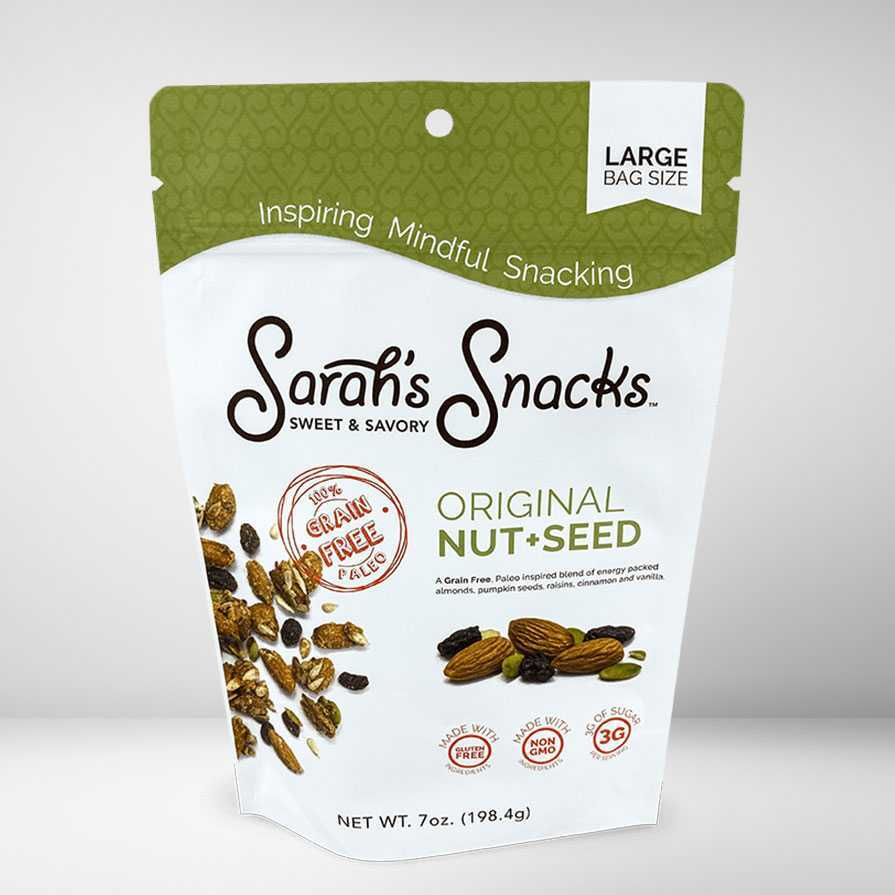

Good snacks are important because food plays such an important role in our lives. It affects how we look, feel and how we perform. As a Registered Dietitian, I create flavorful snacks that allow you to feel good about what you eat
TRY ONE OF OUR FAVOURITES
Check out some of our most popular snacks and products
ORIGINAL NUT & SEED

PRICE: $6.99 - $49.75
DESCRIPTION
A grain-free, paleo-inspired blend of energy packed almonds, pumpkin seeds, organic raisins, cinnamon and vanilla. This delicious mix is naturally glutten free & diary free
This paleo diet inspired snack is a grain-free blend of hearty sunflower seeds, flax, bananas and maple syrup. other paleo snacks don't compare to this mix of rich flavors, all in a naturally glutten and diary-free snack.